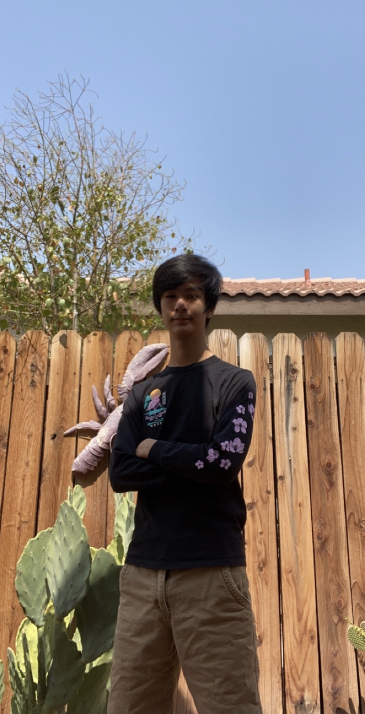

|  |
My future goal once I graduate is to either become a software developer or hold a career revolving around video games. I am taking computer science in order to learn how to code and I plan on further my education in computer science in college once I graduate. This is my career of choice as I have been around computers at a very young age, and I have had some of the most memorable experiences online with my friends. I want to develop a program or game that could have this type of impact on someone’s experience online. One of my most noteworthy strengths is my resourceful nature and my ability to problem solve. I have taught myself to build a computer from scratch using the internet to learn the components of a computer and the order to put together a computer and the proper installation of Windows. I am also very cooperative, capable of working within a team. I am always on top of my share of work, and flexible enough to pick up on other work loads if needed. I am running track and field and cross country in highschool. My proudest accomplishment is the fact that through hard work and dedication I brought my three mile time from twenty-six minutes to a flat twenty minutes. I am able to put together a computer and solve software issues using the internet as a guide. I also know how to handle a large amount of workload as I am in three AP classes currently, and took a dual enrollment course last year. To conclude, I am a sixteen year old high school student learning skills and traits that better prepare myself for the real world. Thank you interest and the time you spent reading about me, and you are welcome to explore the rest of my website. |